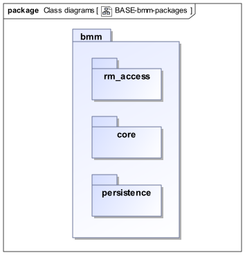

Package Structure
Overview
The BMM packages are as follows:
-
org.openehr.lang.bmm: the BMM-
model_access: the interface to most features including schema load/reload, generally used by an application as a reflection library; -
core: the core BMM classes used for in-memory representation of an object model. This consists of a number of sub-packages:-
model: meta-types representing models and packages; -
entity: meta-types representing classes and types including enumeration types, represented in therange_constrainedsub-package; -
feature: meta-types representing classes features, i.e. constants, routines, properties; -
literal_value: meta-types representing literal values; -
expression: an expression meta-model sufficient for expressing first-order predicate logic expressions, including class invariants and pre- and post-conditions.
-
-
Related packages are:
-
the
org.openehr.lang.bmm_persistencepackage, described in the BMM Persistence specification, which contains the BMM Persistence classes.
These are illustrated below.

Class Definitions
BMM_DEFINITIONS Class
-
Definition
-
Effective
-
BMM
-
UML
Class |
BMM_DEFINITIONS |
|
|---|---|---|
Description |
Definitions used by all BMM packages. |
|
Inherit |
||
Constants |
Signature |
Meaning |
1..1 |
Bmm_internal_version: |
Current internal version of BMM meta-model, used to determine if a given schema can be processed by a given implementation of the model. |
1..1 |
Schema_name_delimiter: |
Delimiter used to separate schema id from package path in a fully qualified path. |
1..1 |
Package_name_delimiter: |
Delimiter used to separate package names in a package path. |
1..1 |
Bmm_schema_file_extension: |
Extension used for BMM files. |
1..1 |
Type_delimiter: |
Appears between a name and a type in a declaration or type signature. |
1..1 |
Generic_left_delimiter: |
Left delimiter for generic class and generic type names, as used in |
1..1 |
Generic_right_delimiter: |
Right delimiter for generic class and generic type names, as used in |
1..1 |
Generic_separator: |
Separator used in Generic types. |
1..1 |
Generic_constraint_delimiter: |
Delimiter between formal type parameter and constraint type, as used in |
1..1 |
Tuple_left_delim: |
Left delimiter of a Tuple type and also instance. Example:
|
1..1 |
Tuple_right_delim: |
Right delimiter of a Tuple type and also instance. |
1..1 |
Tuple_separator: |
Separator used in Tuple types and instances. |
1..1 |
Constraint_left_delim: |
Left delimiter used in serial form of instance constrained enumeration. |
1..1 |
Constraint_right_delim: |
Right delimiter used in serial form of instance constrained enumeration. |
1..1 |
Metadata_bmm_version: |
Attribute name of logical attribute 'bmm_version' in .bmm schema file. |
1..1 |
Metadata_schema_name: |
Attribute name of logical attribute 'schema_name' in .bmm schema file. |
1..1 |
Metadata_rm_publisher: |
Attribute name of logical attribute 'rm_publisher' in .bmm schema file. |
1..1 |
Metadata_rm_release: |
Attribute name of logical attribute 'rm_release' in .bmm schema file. |
1..1 |
Metadata_schema_revision: |
Attribute name of logical attribute 'schema_revision' in .bmm schema file. |
1..1 |
Metadata_schema_lifecycle_state: |
Attribute name of logical attribute 'schema_lifecycle_state' in .bmm schema file. |
1..1 |
Metadata_schema_description: |
Attribute name of logical attribute 'schema_description' in .bmm schema file. |
1..1 |
Metadata_schema_path: |
Path of schema file. |
Functions |
Signature |
Meaning |
1..1 |
Any_class (): |
built-in class definition corresponding to the top `Any' class. |
1..1 |
Any_type (): |
Built-in type definition corresponding to the top `Any' type. |
1..1 |
create_schema_id ( |
Create schema id, formed from:
e.g. |
| BMM_DEFINITIONS | |
|---|---|
Definitions used by all BMM packages. |
|
Inherits: BASIC_DEFINITIONS |
|
Constants |
|
CR: |
Carriage return character. |
LF: |
Line feed character. |
Any_type: |
+ Inherited from BASIC_DEFINITIONS |
Regex_any_pattern: |
+ Inherited from BASIC_DEFINITIONS |
Default_encoding: |
+ Inherited from BASIC_DEFINITIONS |
Bmm_internal_version: |
Current internal version of BMM meta-model, used to determine if a given schema can be processed by a given implementation of the model. |
Schema_name_delimiter: |
Delimiter used to separate schema id from package path in a fully qualified path. |
Package_name_delimiter: |
Delimiter used to separate package names in a package path. |
Bmm_schema_file_extension: |
Extension used for BMM files. |
Type_delimiter: |
Appears between a name and a type in a declaration or type signature. |
Generic_left_delimiter: |
Left delimiter for generic class and generic type names, as used in |
Generic_right_delimiter: |
Right delimiter for generic class and generic type names, as used in |
Generic_separator: |
Separator used in Generic types. |
Generic_constraint_delimiter: |
Delimiter between formal type parameter and constraint type, as used in |
Tuple_left_delim: |
Left delimiter of a Tuple type and also instance. Example:
|
Tuple_right_delim: |
Right delimiter of a Tuple type and also instance. |
Tuple_separator: |
Separator used in Tuple types and instances. |
Constraint_left_delim: |
Left delimiter used in serial form of instance constrained enumeration. |
Constraint_right_delim: |
Right delimiter used in serial form of instance constrained enumeration. |
Metadata_bmm_version: |
Attribute name of logical attribute 'bmm_version' in .bmm schema file. |
Metadata_schema_name: |
Attribute name of logical attribute 'schema_name' in .bmm schema file. |
Metadata_rm_publisher: |
Attribute name of logical attribute 'rm_publisher' in .bmm schema file. |
Metadata_rm_release: |
Attribute name of logical attribute 'rm_release' in .bmm schema file. |
Metadata_schema_revision: |
Attribute name of logical attribute 'schema_revision' in .bmm schema file. |
Metadata_schema_lifecycle_state: |
Attribute name of logical attribute 'schema_lifecycle_state' in .bmm schema file. |
Metadata_schema_description: |
Attribute name of logical attribute 'schema_description' in .bmm schema file. |
Metadata_schema_path: |
Path of schema file. |
Functions |
|
Any_class (): |
built-in class definition corresponding to the top `Any' class. |
Any_type (): |
Built-in type definition corresponding to the top `Any' type. |
create_schema_id ( |
Create schema id, formed from:
e.g. |
{
"name": "BMM_DEFINITIONS",
"documentation": "Definitions used by all BMM packages.",
"ancestors": [
"BASIC_DEFINITIONS"
],
"constants": {
"Bmm_internal_version": {
"name": "Bmm_internal_version",
"documentation": "Current internal version of BMM meta-model, used to determine if a given schema can be processed by a given implementation of the model.",
"type": "String"
},
"Schema_name_delimiter": {
"name": "Schema_name_delimiter",
"documentation": "Delimiter used to separate schema id from package path in a fully qualified path.",
"type": "String",
"value": "\"::\""
},
"Package_name_delimiter": {
"name": "Package_name_delimiter",
"documentation": "Delimiter used to separate package names in a package path.",
"type": "String",
"value": "\".\""
},
"Bmm_schema_file_extension": {
"name": "Bmm_schema_file_extension",
"documentation": "Extension used for BMM files.",
"type": "String",
"value": "\".bmm\""
},
"Type_delimiter": {
"name": "Type_delimiter",
"documentation": "Appears between a name and a type in a declaration or type signature.",
"type": "Character",
"value": "':'"
},
"Generic_left_delimiter": {
"name": "Generic_left_delimiter",
"documentation": "Left delimiter for generic class and generic type names, as used in `List<T>`.",
"type": "Character",
"value": "'<'"
},
"Generic_right_delimiter": {
"name": "Generic_right_delimiter",
"documentation": "Right delimiter for generic class and generic type names, as used in `List<T>`.",
"type": "Character",
"value": "'>'"
},
"Generic_separator": {
"name": "Generic_separator",
"documentation": "Separator used in Generic types.",
"type": "Character",
"value": "','"
},
"Generic_constraint_delimiter": {
"name": "Generic_constraint_delimiter",
"documentation": "Delimiter between formal type parameter and constraint type, as used in `Sortable<T: Ordered>`.",
"type": "Character",
"value": "':'"
},
"Tuple_left_delim": {
"name": "Tuple_left_delim",
"documentation": "Left delimiter of a Tuple type and also instance. Example:\n\n* `[Integer, String]` - a tuple type;\n* `[3, \"Quixote\"]` - a tuple.",
"type": "Character",
"value": "'['"
},
"Tuple_right_delim": {
"name": "Tuple_right_delim",
"documentation": "Right delimiter of a Tuple type and also instance.",
"type": "Character",
"value": "']'"
},
"Tuple_separator": {
"name": "Tuple_separator",
"documentation": "Separator used in Tuple types and instances.",
"type": "Character",
"value": "','"
},
"Constraint_left_delim": {
"name": "Constraint_left_delim",
"documentation": "Left delimiter used in serial form of instance constrained enumeration.",
"type": "Character",
"value": "'«'"
},
"Constraint_right_delim": {
"name": "Constraint_right_delim",
"documentation": "Right delimiter used in serial form of instance constrained enumeration.",
"type": "Character",
"value": "'»'"
},
"Metadata_bmm_version": {
"name": "Metadata_bmm_version",
"documentation": "Attribute name of logical attribute 'bmm_version' in .bmm schema file.",
"type": "String",
"value": "\"bmm_version\""
},
"Metadata_schema_name": {
"name": "Metadata_schema_name",
"documentation": "Attribute name of logical attribute 'schema_name' in .bmm schema file.",
"type": "String",
"value": "\"schema_name\""
},
"Metadata_rm_publisher": {
"name": "Metadata_rm_publisher",
"documentation": "Attribute name of logical attribute 'rm_publisher' in .bmm schema file.",
"type": "String",
"value": "\"rm_publisher\""
},
"Metadata_rm_release": {
"name": "Metadata_rm_release",
"documentation": "Attribute name of logical attribute 'rm_release' in .bmm schema file.",
"type": "String",
"value": "\"rm_release\""
},
"Metadata_schema_revision": {
"name": "Metadata_schema_revision",
"documentation": "Attribute name of logical attribute 'schema_revision' in .bmm schema file.",
"type": "String",
"value": "\"schema_revision\""
},
"Metadata_schema_lifecycle_state": {
"name": "Metadata_schema_lifecycle_state",
"documentation": "Attribute name of logical attribute 'schema_lifecycle_state' in .bmm schema file.",
"type": "String",
"value": "\"schema_lifecycle_state\""
},
"Metadata_schema_description": {
"name": "Metadata_schema_description",
"documentation": "Attribute name of logical attribute 'schema_description' in .bmm schema file.",
"type": "String",
"value": "\"schema_description\""
},
"Metadata_schema_path": {
"name": "Metadata_schema_path",
"documentation": "Path of schema file.",
"type": "String",
"value": "\"schema_path\""
}
},
"functions": {
"Any_class": {
"name": "Any_class",
"documentation": "built-in class definition corresponding to the top `Any' class.",
"result": {
"_type": "P_BMM_SIMPLE_TYPE",
"type": "BMM_SIMPLE_CLASS"
}
},
"Any_type": {
"name": "Any_type",
"documentation": "Built-in type definition corresponding to the top `Any' type.",
"result": {
"_type": "P_BMM_SIMPLE_TYPE",
"type": "BMM_SIMPLE_TYPE"
}
},
"create_schema_id": {
"name": "create_schema_id",
"documentation": "Create schema id, formed from:\n\n`a_model_publisher '-' a_schema_name '-' a_model_release`\n\ne.g. `openehr_rm_1.0.3`, `openehr_test_1.0.1`, `iso_13606_1_2008_2.1.2`.",
"parameters": {
"a_model_publisher": {
"_type": "P_BMM_SINGLE_FUNCTION_PARAMETER",
"name": "a_model_publisher",
"type": "Any"
},
"a_schema_name": {
"_type": "P_BMM_SINGLE_FUNCTION_PARAMETER",
"name": "a_schema_name",
"type": "Any"
},
"a_model_release": {
"_type": "P_BMM_SINGLE_FUNCTION_PARAMETER",
"name": "a_model_release",
"type": "String"
}
},
"result": {
"_type": "P_BMM_SIMPLE_TYPE",
"type": "String"
}
}
}
}